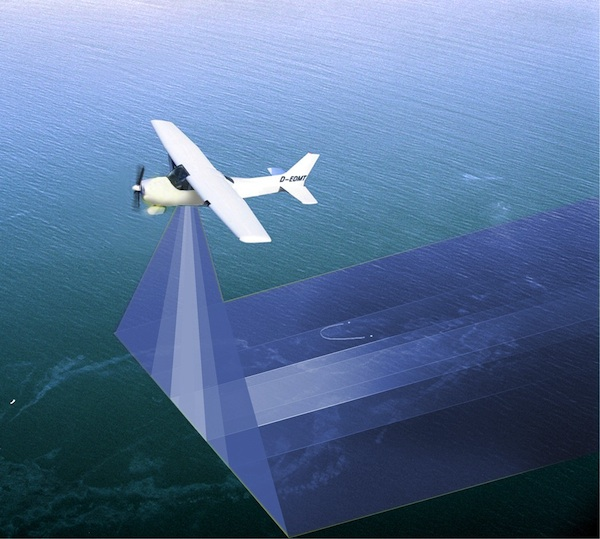
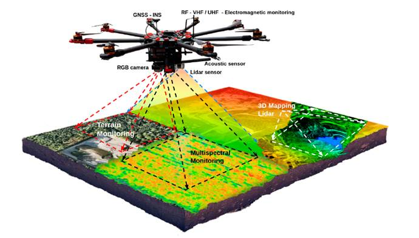
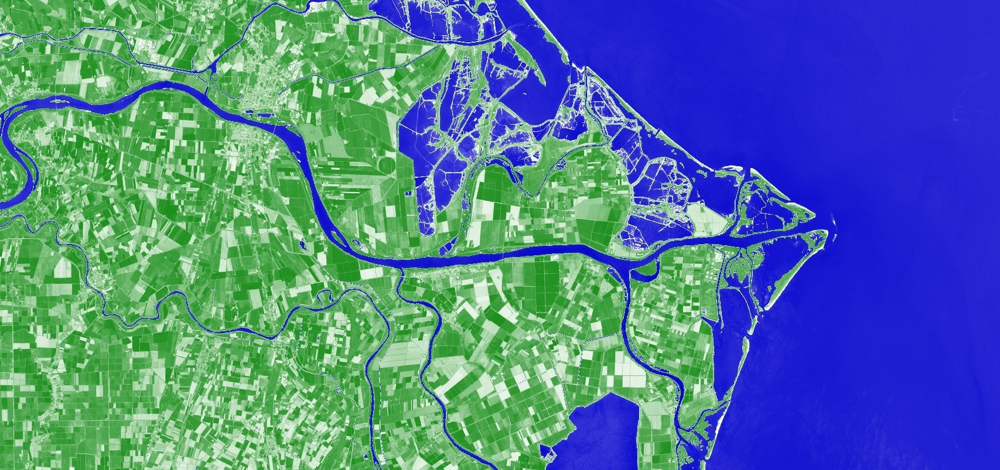
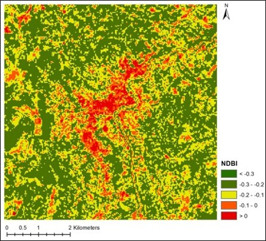
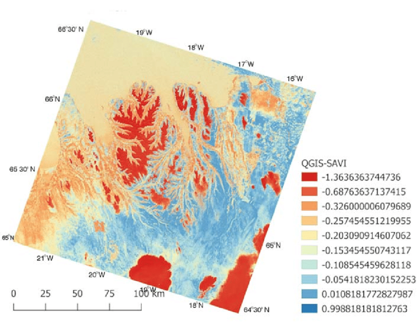

هەستکردن لە دوورەوە
زانستی کۆکردنەوەی زانیاری بەبێ بەرکەوتنی ڕاستەوخۆ
Remote Sensing - The Science of Earth Observation
📖 ناساندنی هەستکردن لە دوورەوە
Introduction to Remote Sensing
🛰️ هەستکردن لە دوورەوە چییە؟
بریتییە لە زانست و هونەری بەدەستهێنانی زانیاری دەربارەی تەنەکان یان دیاردەکانی سەر ڕووی زەوی، بەبێ ئەوەی پەیوەندییەکی فیزیکیی ڕاستەوخۆ لە نێوان ئامێرەکە و تەنەکەدا هەبێت. ئەمەش لە ڕێگەی تۆمارکردنی ئەو وزە و تیشکە ئەنجام دەدرێت کە لە تەنەکانەوە دەردەچێت یان لێیانەوە دەگەڕێتەوە.
Remote Sensing is the science and art of obtaining information about objects or phenomena on the Earth's surface without direct physical contact between the instrument and the object.
🔬 چۆنیەتیی کارکردن
١. سەرچاوەی وزە (Energy Source): وەک تیشکی خۆر
٢. کارلێک (Interaction): تیشکەکە بەر تەنەکانی سەر زەوی دەکەوێت
٣. تۆمارکردن (Recording): هەستەوەرەکان (Sensors) تیشکە گەڕاوەکان تۆمار دەکەن
٤. شیکردنەوە (Analysis): داتاکان دەگۆڕدرێن بۆ وێنە و زانیاریی بەسوود
1. Energy Source | 2. Interaction with Target | 3. Recording by Sensors | 4. Analysis and Interpretation
سەرچاوەی وزە
Energy Source
کارلێک
Interaction
تۆمارکردن
Recording
گواستنەوە
Transmission
شیکردنەوە
Analysis
داپۆشینی فراوان
Wide Coverage
توانای وێنەگرتنی ڕووبەری زۆر گەورە لە کاتێکی کەمدا.
چاودێریی بەردەوام
Temporal Monitoring
توانای دووبارە وێنەگرتنەوەی هەمان شوێن لە کاتە جیاوازەکاندا.
داتای ژمارەیی
Digital Data
زانیارییەکان بە شێوازی دیجیتاڵین و بە ئاسانی شیکردنەوەیان بۆ دەکرێت.
چەند باندی
Multispectral
زانیاری لە چەندین درێژی شەپۆل کۆدەکرێتەوە.
📜 مێژووی کورت
١٨٥٨: یەکەم وێنەی هەوایی لە پەرێزەوە (فەڕەنسا)
١٩٠٣: وێنەگرتن لە کۆتر
١٩٦٠: یەکەم مانگە دەستکردی کەشوهەوا (TIROS-1)
١٩٧٢: نارینی Landsat-1
٢٠١٥+: سەردەمی نوێی مانگە دەستکردەکان (Sentinel, Planet)
1858: First aerial photo | 1903: Pigeon photography | 1960: TIROS-1 | 1972: Landsat-1 | 2015+: New satellite era
🌈 تیشکی ئەلیکترۆماگنەتیکی (EMR)
Electromagnetic Radiation
📡 تیشکی ئەلیکترۆماگنەتیکی چییە؟
تیشکی ئەلیکترۆماگنەتیکی (Electromagnetic Radiation) ئەو وزەیەیە کە بە شێوەی شەپۆل لە بۆشاییدا بڵاودەبێتەوە و بنەمای کارکردنی ئەم زانستەیە.
EMR is a form of energy that propagates as waves and is the foundation of remote sensing.

سپێکتڕۆمی ئەلیکترۆماگنەتیکی
Electromagnetic Spectrum
👁️ باندە سەرەکییەکان (Spectral Bands)
تیشکی بینراو (Visible - 0.4-0.7 μm): ئەو تیشکەی چاوی مرۆڤ دەیبینێت (شین، سەوز، سوور)
ئینفراسووری نزیک (NIR - 0.7-1.3 μm): زۆر گرنگە بۆ ناسینەوەی تەندروستیی ڕووەک
ئینفراسووری کورت شەپۆل (SWIR - 1.3-3 μm): بۆ شێ و جیۆلۆجی
ئینفراسووری گەرمی (Thermal IR - 3-14 μm): بۆ پێوانی پلەی گەرمیی ڕووکەشەکان
مایکرۆوەیڤ (Microwave - 1mm-1m): توانای تێپەڕینی بەناو هەور و باراندا هەیە
Visible | Near Infrared | Shortwave Infrared | Thermal Infrared | Microwave
🔬 واژۆی تیشکی (Spectral Signature)
هەر تەنێک لەسەر زەوی (ئاو، ڕووەک، خاک) بە شێوازێکی جیاواز تیشک دەداتەوە، کە وەک پەنجەمۆر وایە بۆ ناسینەوەی جۆری تەنەکە.
ڕووەک سەوز: زۆر گەڕانەوە لە NIR، کەم لە سوور
ئاو: کەم گەڕانەوە لە NIR
خاک: گەڕانەوەی مامناوەند لە هەموو باندەکان
Spectral Signature: Each object has a unique pattern of reflection, like a fingerprint for identification.
🚀 پلاتفۆرم و هەستەوەرەکان
Platforms & Sensors
🛸 پلاتفۆرمەکان (Platforms)
ئەو کەرەستانەن کە هەستەوەرەکەیان لەسەر جێگیر دەکرێت.
Platforms are the carriers on which sensors are mounted for data collection.
مانگە دەستکردەکان
Satellites
بۆ داپۆشینی جیهانی و وێنەی گەورە. بەرزی ٤٠٠-٣٦,٠٠٠ کم.

فڕۆکە
Aircraft
بۆ وێنەی وردتر و پڕۆژەی تایبەت. بەرزی ١-١٢ کم.

فڕۆکەی بێفڕۆکەوان
Drone/UAV
بۆ وردیی زۆر بەرز و ڕووبەری بچووک. بەرزی ٥٠-٥٠٠ مەتر.
زەمینی
Ground-based
سەنسەری زەمینی، سپێکترۆمەتەر. بۆ کالیبراسیۆن و وردی.
🌐 جۆرەکانی خولگە (Orbit)
خولگەی خۆرهەڵاتی (Sun-synchronous): هەمیشە لە هەمان کاتی ناوخۆیی تێدەپەڕێت - Landsat, Sentinel
جیۆستەیشنەری (Geostationary): لە شوێنێکی جێگیر دەمێنێتەوە - بۆ کەشوهەوا
خولگەی کەم (LEO): بەرزی ٤٠٠-٢٠٠٠ کم - زۆربەی مانگە دەستکردەکانی چاودێری
Sun-synchronous: Same local time | Geostationary: Fixed position | Low Earth Orbit: 400-2000 km
📷 هەستەوەرەکان
Remote Sensing Sensors
🎛️ جۆرەکانی هەستەوەر (Sensors)
هەستەوەر ئەو ئامێرەیە کە تیشک تۆمار دەکات و بە سیگناڵی ئەلیکترۆنی دەیگۆڕێت.
Sensor is the device that records radiation and converts it to electronic signals.

هەستەوەری ناچالاک
Passive Sensor
تیشکی گەڕاوەی خۆر تۆمار دەکات (وەک کامێرای ئۆپتیکی).

هەستەوەری چالاک
Active Sensor
ئامێرەکە خۆی تیشک دەنێرێت و گەڕانەوەکەی دەپێوێت (وەک ڕادار و لیدار).
📐 وردیی جیاکەرەوە (Resolution)
چوار جۆری وردی هەن کە تایبەتمەندی هەستەوەر دیاری دەکەن.

وردیی شوێنی
Spatial Resolution
قەبارەی پیکسڵەکان لەسەر زەوی

وردیی تیشکی
Spectral Resolution
توانای جیاکردنەوەی باندە تیشکییەکان

وردیی ڕادیۆمەتریک
Radiometric Resolution
توانای جیاکردنەوەی پلەی ڕووناکی

وردیی کاتی
Temporal Resolution
چەند جار دووبارە دەکرێتەوە
📊 پۆلێنکردنی وردیی شوێنی
| پۆل | قەبارەی پیکسڵ | نموونە |
|---|---|---|
| زۆر بەرز | < 1 m | WorldView, Pleiades |
| بەرز | 1-10 m | Sentinel-2, SPOT |
| مامناوەند | 10-100 m | Landsat |
| کەم | > 100 m | MODIS, AVHRR |
🛰️ مانگە دەستکردە سەرەکییەکان
Major Remote Sensing Satellites
🌍 مانگە دەستکردەکانی چاودێری زەوی
چەندین مانگە دەستکرد هەن کە داتای خۆڕای یان بازرگانی دابین دەکەن.
Several satellites provide free or commercial data for Earth observation.
Landsat
NASA/USGS - Since 1972
پڕۆژەیەکی ئەمریکییە، کۆنترین ئەرشیفی وێنەی مانگی دەستکردی هەیە. Landsat-8/9 چالاکن. وردی ٣٠م. ١١ باند. خۆڕای.
Sentinel
ESA - Copernicus Program
پڕۆژەی یەکێتی ئەوروپایە، داتای بەهێز و خۆڕایی پێشکەش دەکات. Sentinel-2: وردی ١٠م، ١٣ باند.
MODIS
NASA - Terra/Aqua
بۆ چاودێریی ڕۆژانەی گۆڕانکارییەکانی زەوی بەکاردێت. وردی ٢٥٠-١٠٠٠م. ٣٦ باند. خۆڕای.
SPOT
CNES/Airbus
وردی ١.٥-٦م. بازرگانی. لە ١٩٨٦ەوە.
WorldView
Maxar Technologies
مانگە دەستکردە بازرگانییەکان وەک WorldView کە وردییەکی زۆر بەرزیان هەیە (٠.٣م).
Planet
Planet Labs
١٥٠+ مانگە دەستکردی بچووک. چاودێری ڕۆژانە. وردی ٣-٥م.
🆓 سەرچاوەی داتای خۆڕای
USGS Earth Explorer: Landsat, ASTER, MODIS
Copernicus Open Access Hub: Sentinel-1, 2, 3
Google Earth Engine: چەندین داتاسێت
NASA Earthdata: داتای NASA
Free data sources for remote sensing research and applications.
⚙️ پرۆسێسکردن و شیکردنەوە
Image Processing & Analysis
🔧 پرۆسێسکردن چییە؟
پرۆسێسکردنی وێنە مەبەستی چاککردن و ئامادەکردنی داتا بۆ شیکردنەوەیە.
Image processing involves correcting and preparing data for analysis.
ڕاستکردنەوەی جیۆمەتری
Geometric Correction
بۆ ئەوەی وێنەکە ڕێک بکەوێتەوە لەگەڵ پۆتانەکانی سەر زەوی.
ڕاستکردنەوەی بەرگەهەوا
Atmospheric Correction
لابردنی کاریگەریی تۆز و هەور لەسەر وێنەکە.
ڕاستکردنەوەی ڕادیۆمەتریک
Radiometric Correction
لابردنی کاریگەری هەستەوەر. گۆڕین بە Reflectance.
باشترکردنی وێنە
Image Enhancement
باشترکردنی بینینی وێنە: کۆنتراست، فیلتەر، تیزکردنەوە.
🎨 پۆلێنکردنی وێنە (Image Classification)
گۆڕینی وێنەکە بۆ نەخشەیەک (بۆ نموونە: دیاریکردنی ناوچە سەوزەکان، ئاو و باڵەخانەکان).
پۆلێنکردنی چاودێرکراو (Supervised): بەکارهێنەر نموونە دیاری دەکات و ئەلگۆریزم فێر دەبێت.
پۆلێنکردنی چاودێرنەکراو (Unsupervised): ئەلگۆریزم خۆی پۆلەکان دەدۆزێتەوە (کڵەستەرینگ).
پۆلێنکردنی شتی (Object-based): لە جیاتی پیکسڵ، شتەکان پۆلێن دەکرێن.
Supervised: User provides training samples | Unsupervised: Algorithm finds clusters | Object-based: Classifies objects, not pixels
💻 سۆفتوێرەکان
خۆڕای: QGIS + Semi-Automatic Classification Plugin, GRASS GIS, Google Earth Engine
بازرگانی: ENVI, ERDAS IMAGINE, ArcGIS Pro
پایتۆن: Rasterio, GDAL, scikit-learn, TensorFlow
Free: QGIS, GEE | Commercial: ENVI, ERDAS | Python: Rasterio, GDAL
📊 ئیندێکسە تیشکییەکان
Spectral Indices
📈 ئیندێکس چییە؟
ئیندێکسە تیشکییەکان فۆرمولەکانن کە چەند باندێک تێکەڵ دەکەن بۆ دەرخستنی زانیاری تایبەت دەربارەی ڕووکەش.
Spectral indices are formulas combining bands to extract specific information about surfaces.
NDVI
پێوانی ڕادەی سەوزی و تەندروستیی ڕووەک
Vegetation Health

NDWI
ناسینەوە و دیاریکردنی سنووری ئاو
Water Detection

NDBI
دیاریکردنی ناوچە ئاوەدانەکان و باڵەخانەکان
Built-up Area

SAVI
ڕووەک + خاک
Soil-Adjusted
🌿 NDVI - باوترین ئیندێکس
NDVI باوترین ئیندێکسە بۆ پێوانی ڕادەی سەوزی و تەندروستیی ڕووەک. نرخی لە -١ تا +١ ـە.
-١ تا ٠: ئاو، هەور، بەفر
٠ تا ٠.٢: خۆڵی ڕووت، بەرد، شار
٠.٢ تا ٠.٤: ڕووەکی کەم (گیا)
٠.٤ تا ٠.٦: ڕووەکی مامناوەند
٠.٦ تا ١: ڕووەکی قەڵەو (دارستان)
NDVI values: -1 to 0 (water/clouds) | 0-0.2 (bare soil) | 0.2-0.4 (sparse vegetation) | 0.4-0.6 (moderate) | 0.6-1 (dense vegetation)
📋 ئیندێکسەکانی تر
| ئیندێکس | مەبەست | بەکارهێنان |
|---|---|---|
| EVI | ئیندێکسی ڕووەکی باشترکراو | ناوچەی ڕووەکی قەڵەو |
| MNDWI | ئیندێکسی ئاوی گۆڕاو | جیاکردنی ئاو لە شار |
| NBR | ڕێژەی سووتان | چاودێری ئاگرکەوتن |
| LST | پلەی گەرمی زەوی | دورگەی گەرمی شار |
🌍 بوارەکانی بەکارهێنان
Applications of Remote Sensing

کشتوکاڵ
Agriculture
چاودێریی بەرهەم و وشکەساڵی، تەخمینی بەرهەم، کشتوکاڵی ورد.
ژینگە و دارستان
Environment & Forestry
چاودێریی ئاگری دارستانەکان و بڕینەوەی دارەکان، تەخمینی بایۆماس.

شارسازی
Urban
نەخشەسازی بۆ گەشەکردنی شارەکان، پۆلێنکردنی بەکارهێنانی زەوی، دورگەی گەرمی شار.

ئاو
Water Resources
نەخشەسازی ئاو، چاودێری لافاو، کوالیتی ئاو، وشکەساڵی.
جیۆلۆجی
Geology
نەخشەسازی جیۆلۆجی، گەڕان بەدوای کانزا، شکاو و لایەنەکان.

دەریا
Marine/Coastal
پلەی گەرمی دەریا، کلۆرۆفیل، گۆڕانی کەناراو.

کارەساتە سروشتییەکان
Disaster Management
دیاریکردنی زیانەکانی لافاو و بوومەلەرزە، ئاگر، نەخشەسازی زیان.

ئاووهەوا
Climate
گۆڕانکاری ئاووهەوا، توانی سەهۆڵ، گاز greenhouse.
🔬 Google Earth Engine

پلاتفۆرمێکی هەورە (Cloud) کە ڕێگە دەدات بە شیکردنەوەی خێرای بڕێکی یەکجار زۆر لە داتای مانگە دەستکردەکان.
تایبەتمەندییەکان: داتای خۆڕای زۆر، شیکردنەوەی خێرا، کۆدنووسین بە JavaScript/Python
Google Earth Engine: Cloud platform for geospatial analysis with petabytes of satellite data and powerful processing capabilities.